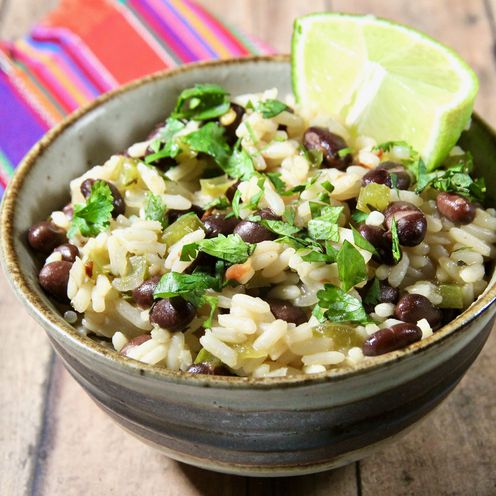

Moros y Cristianos

Descripcion
Moros y Cristianos is a traditional Cuban dish that combines black beans (Moros) and white rice (Cristianos) cooked together with garlic, onions, and spices, creating a flavorful and hearty meal.
Ingredients
- 1 cup black beans, soaked overnight and drained
- 1 cup white rice
- 1 onion, chopped
- 2 cloves garlic, minced
- 1 bell pepper, chopped
- 2 tbsp olive oil
- 1 tsp cumin
- Salt and pepper to taste
Instructions
- In a large pot, heat the olive oil over medium heat. Add the chopped onion, bell pepper, and minced garlic. Sauté until the vegetables are softened.
- Add the soaked and drained black beans to the pot. Stir in the cumin, salt, and pepper. Cook for a few minutes to allow the flavors to combine.
- Add 2 cups of water to the pot and bring to a boil. Reduce heat to low, cover, and simmer for about 1 hour or until the beans are tender.
- In a separate pot, cook the white rice according to package instructions.
- Once both the beans and rice are cooked, combine them in a large serving dish. Mix well to ensure the flavors are evenly distributed.
- Serve hot as a main dish or as a side dish with your favorite Cuban entrees.
Home